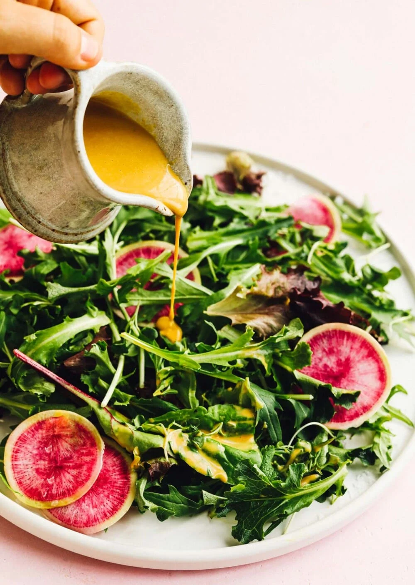

Quick Salad Dressing

Description
Prep time: 5mins
Zesty salad dressing made with nutritional yeast. Dairy-free and cholesterol-free.
Ingredients
- 1/4 cup + 1 tablespoon nutritional yeast
- 2 1/2 tablespoons apple cider vinegar
- 1 clove of garlic, sliced
- 2 tablespoons + 1 teaspoon tamari (or soy sauce)
- 1 teaspoon maple syrup
- 3 cracks black pepper
- 2 tablespoons water
- 1/3 cup + 2 tablespoons sunflower oil or grapeseed oil
Steps
- Add all ingredients EXCEPT oil to a small blender jar (or a wide, tall sided mason jar if you want to use an immersion blender).
- Blend about 20 seconds until smooth.
- With blender running on low, SLOWLY stream in oil through the top hole (or into glass jar), so that it emulsifies and is very smooth. If you pour the oil in too fast, it will not emulsify.
- Pour dressing into a jar and refrigerate for an hour before eating, so that the flavors have time to mingle and the dressing will also thicken a bit. Will keep in the refrigerator for up 2-3 weeks.